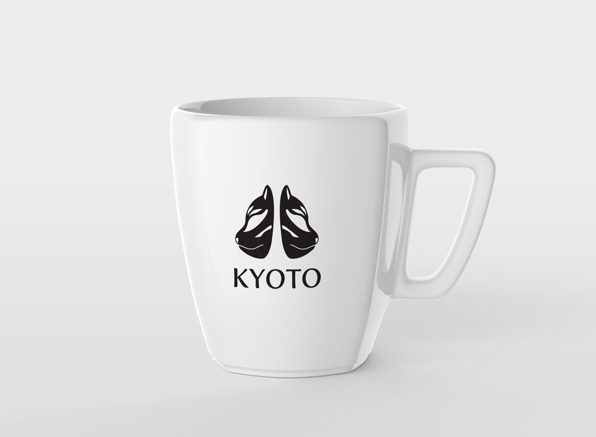

Tourism Logo Design
I chose Kyoto, Japan as the international city for my logo. The city of Kyoto is the most traditional and historical place in Japan, and it sparked an interest in me because everything people think about Japan they think about anime and not its history. In creating this logo, I researched their history and folktales that are still being passed down and retold every generation. During the research, I decided on creating a logo base on foxes, as they are well-worshipped in Japan, where they are seen as protectors by Japanese citizens.
